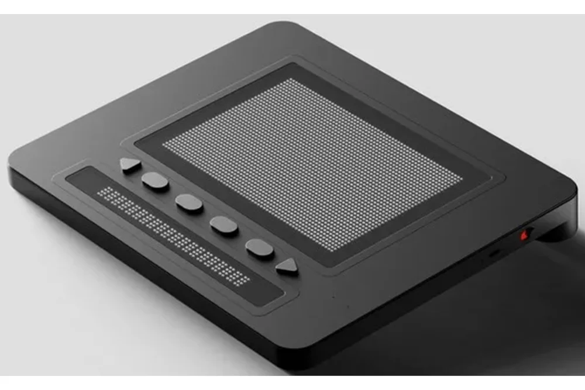
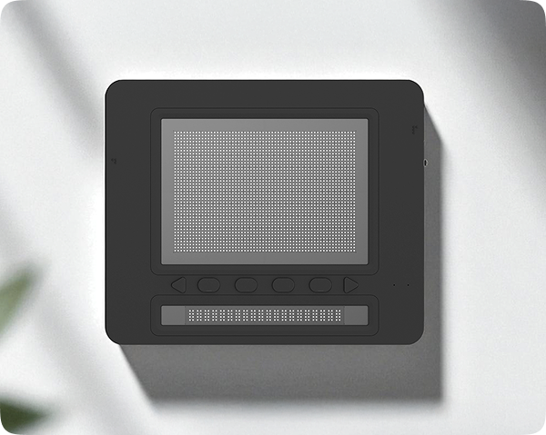
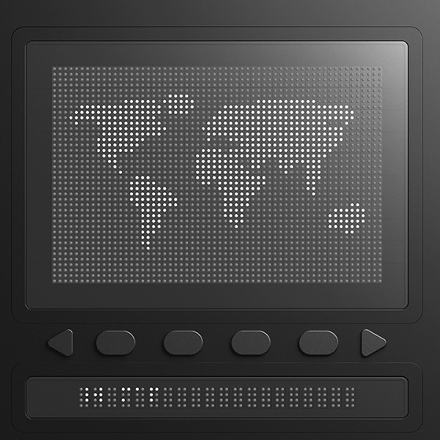
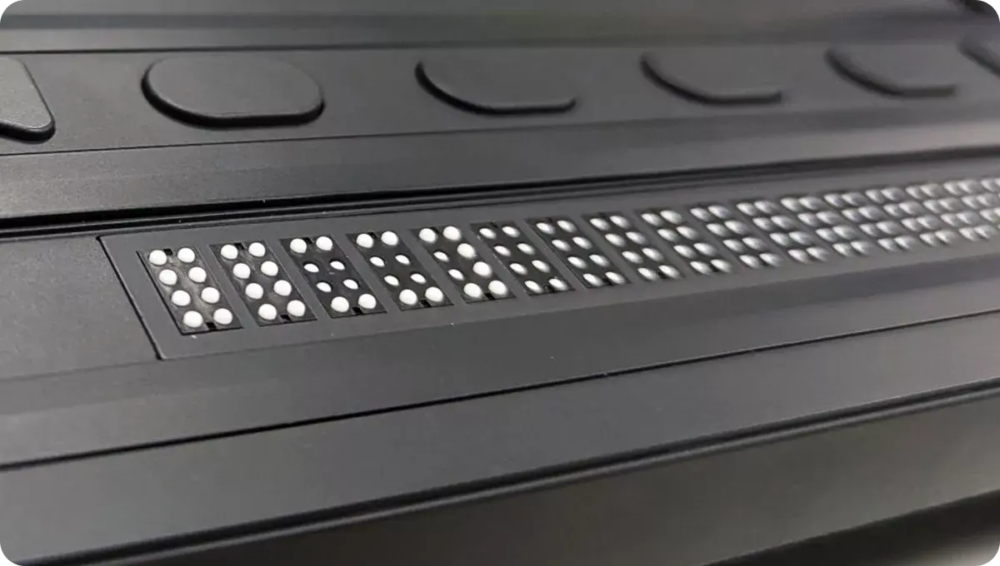
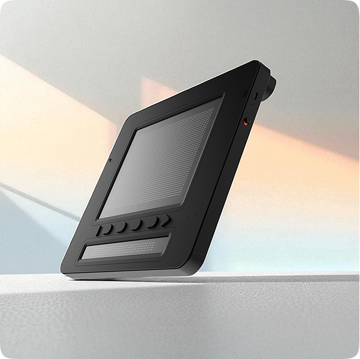

Una pantalla que convierte texto, gráficos y diagramas en relieve que se puede tocar.
Cambia la forma en que una persona ciega usa un ordenador o un móvil.
Presentado por Dot Inc. el
.

El Dot Pad X en perspectiva: zona de pines, botones y línea de braille.
Ficha rápida
Fabricante
Dot Inc. (Corea del Sur)
Tipo
Pantalla táctil de braille y gráficos
Zona de gráficos
300 celdas
Línea de braille
20 celdas
Peso
1,2 kg
Garantía
2 años
Contexto
¿Qué es el Dot Pad X?
El Dot Pad X es un dispositivo que se conecta a un ordenador, una tableta
o un móvil y dibuja lo que hay en pantalla con pequeños pines que suben y bajan.
La información deja de ser solo visual o sonora y se puede tocar.
Tiene dos zonas: una superficie de 300 celdas para gráficos y braille
en varias líneas, y una fila de 20 celdas de braille para leer texto
[1].
Dot Inc. lo presentó a finales de 2025 como mejora de su modelo anterior, el Dot Pad 320A
[3]. Es un hardware reciente y por eso encaja bien en la
asignatura de IPO.

Vista desde arriba: gráficos arriba, botones en medio y braille debajo.
El problema que intenta resolver
Casi todas las interfaces son gráficas: iconos, tablas, gráficas, mapas… Una persona ciega
suele usar un lector de pantalla, que lo convierte todo en voz o en una sola línea de
braille. Eso funciona bien con texto, pero no con lo que depende del espacio: la forma de
una figura, la posición de un punto o cómo está organizada una hoja de cálculo.
Qué interacción cambia
Un canal nuevo. Se añade el tacto en dos dimensiones, además de la voz y el braille de una fila.
Exploración libre. La persona recorre la imagen a su ritmo y puede volver a un punto concreto.
Respuesta inmediata. Si el contenido cambia en pantalla, el relieve cambia también.
Varios canales a la vez. Se puede combinar con la voz del lector de pantalla y con los botones del aparato.
Más autonomía. Se depende menos de material preparado por otras personas.
Glosario
Celda braille
Grupo de puntos en relieve que representa una letra o un símbolo.
Gráficos táctiles
Imágenes, mapas o diagramas hechos en relieve para explorarlos con las manos.
Lector de pantalla
Programa que cuenta lo que hay en pantalla con voz o braille. Por ejemplo, JAWS, NVDA y VoiceOver.
Háptico
Relacionado con el sentido del tacto como forma de comunicarse con un sistema.
Funcionamiento
Cómo se usa
Se enciende y se conecta al equipo por Bluetooth LE o con un cable USB-C.
El lector de pantalla o la aplicación Dot Apps le manda el contenido: texto, una imagen, una gráfica o un documento.
Los pines de la zona de 300 celdas suben para formar el relieve y la fila de 20 celdas muestra el texto en braille.
La persona explora con las manos y usa los botones para acercar, mover, girar o invertir lo que está tocando [1].
Cuando el contenido cambia, los pines se actualizan.

Un mapamundi mostrado en la zona de gráficos.
Características y beneficios
Qué hace cada característica, para qué sirve y cómo se relaciona con la IPO
Característica
Qué hace
Beneficio
Relación con la IPO
Doble pantalla: 300 + 20 celdas
Separa la zona de gráficos de la fila de texto.
Se puede mirar una imagen y leer texto sin cambiar de aparato.
Salida multimodal.
Relieve en tiempo real
Actualiza los pines rápido cuando cambia el contenido.
Se puede seguir una gráfica o una hoja de cálculo mientras se trabaja.
Retroalimentación inmediata.
Compatibilidad
Funciona con iOS, iPadOS, macOS, visionOS y Windows con JAWS, y también con NVDA y VoiceOver.
Se usa con las herramientas que la persona ya conoce.
Coherencia con el entorno y tecnologías de apoyo.
Controles físicos
Seis botones personalizables y funciones de zoom, desplazamiento, giro e inversión.
Control directo y adaptable. Según el fabricante, se aprende rápido.
Control y facilidad de aprendizaje.
Tamaño reducido
Mide 273 × 228 × 16 mm y pesa 1,2 kg.
Se puede llevar a clase, al trabajo o de viaje.
Contexto de uso.
Dot Apps y Dot Canvas
Sirven para crear, explorar y compartir contenido táctil.
La persona también puede crear contenido, no solo recibirlo.
Interacción en los dos sentidos.
Ficha técnica
Datos principales del Dot Pad X
Apartado
Dato
Gráficos táctiles
300 celdas (gráficos y braille en varias líneas)
Línea de braille
20 celdas
Conexión
USB-C y Bluetooth LE
Compatibilidad
iOS/iPadOS 15.2 o superior, macOS 13.3 o superior, visionOS 1.0 o superior y Windows con JAWS; también NVDA y VoiceOver
Controles
6 botones personalizables y navegación táctil
Medidas y peso
273 × 228 × 16 mm; 1,2 kg
Tecnología
Actuador patentado Dot Actuator 3.0
Garantía
2 años
A quién ayuda
Alumnado de primaria y secundaria: puede tocar figuras y mapas de matemáticas, ciencias o geografía.
Estudiantes universitarios y de ámbito STEM: pueden acceder a diagramas y gráficas sin esperar a una versión adaptada.
Docentes y especialistas: pueden preparar material táctil al momento.
Profesionales: pueden leer documentos, hojas de cálculo y páginas web en varias líneas.
Más fotografías

Detalle de la línea de braille, con los puntos en relieve.

En esta vista inclinada se aprecia lo plano que es el aparato.
Preguntas frecuentes
¿Qué lo diferencia de otras pantallas braille?
Junta en un mismo aparato una zona de gráficos y braille en varias líneas con una fila de braille para texto. Así se puede trabajar con imágenes y con texto a la vez.
¿Funciona con móviles y tabletas?
Sí. Según el fabricante, es compatible con iOS y iPadOS (desde la 15.2), macOS, visionOS y Windows con JAWS, además de NVDA y VoiceOver.
¿Es fácil de llevar?
Pesa 1,2 kg y tiene 16 mm de grosor, así que cabe en una mochila.
Evolución
Cronología
1829. Louis Braille publica el sistema de lectura y escritura que lleva su nombre.
Finales del siglo XX. Aparecen las líneas braille electrónicas: una sola fila de celdas que cambia según el texto de la pantalla.
Años después. Los lectores de pantalla (JAWS, NVDA, VoiceOver) se convierten en la forma habitual de usar ordenadores y móviles.
Antes del Dot Pad X. Dot Inc. saca el Dot Pad 320A.
10 de noviembre de 2025. Dot Inc. presenta el Dot Pad X [3].
Qué sustituye o mejora
Soluciones anteriores, sus límites y qué cambia con el Dot Pad X
Antes
Qué ofrecía
Límite
Qué cambia
Libros y láminas en relieve
Texto y dibujos fijos que se tocan.
Son estáticos, hay que prepararlos antes y suelen tener pocas imágenes.
El relieve se genera al momento desde cualquier contenido digital.
Línea braille de una fila
Leer texto en braille con un aparato electrónico.
Solo enseña una línea y no sirve para gráficos.
Añade una zona de 300 celdas y mantiene una fila de 20 para el texto.
Lector de pantalla solo con voz
Lee en voz alta textos y elementos de la interfaz.
Es secuencial y cuesta captar formas y posiciones.
Aporta un canal táctil en dos dimensiones que se suma a la voz.
Dot Pad 320A
Pantalla táctil de gráficos y braille de la misma empresa.
Pines más lentos, con indicadores y firmware menos pulidos.
Pines más rápidos y suaves, y mejores indicadores y firmware [2].
Ojo: el fabricante dice que el Dot Pad X es hasta diez veces más rápido que la
generación anterior. Es un dato de la propia empresa, no de una medición independiente.
Conclusión
Con el Dot Pad X, una persona ciega puede tocar una gráfica, un mapa o una
hoja de cálculo cuando aparece en pantalla, y leer texto en braille sin cambiar de aparato.
Antes tenía material impreso y fijo, una sola línea braille o solo voz. Ahora gana rapidez,
autonomía y una forma de explorar la información que respeta cómo está colocada en el espacio.
Desde la IPO, reduce el golfo de evaluación y amplía los canales entre la persona y el sistema.
Fuentes
Dónde he encontrado la información
Los datos técnicos vienen de las páginas oficiales de Dot Inc. Las explicaciones están escritas por mí. Los enlaces se abren en una pestaña nueva.